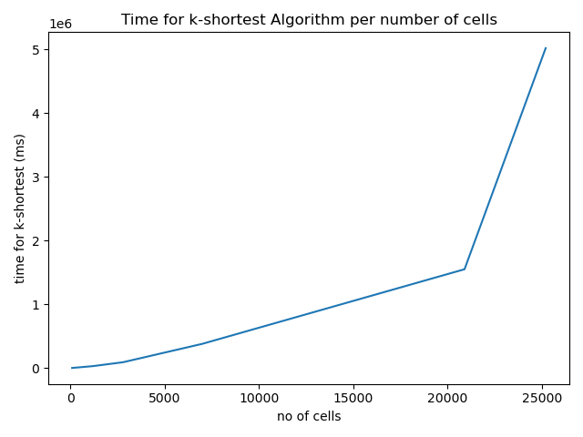
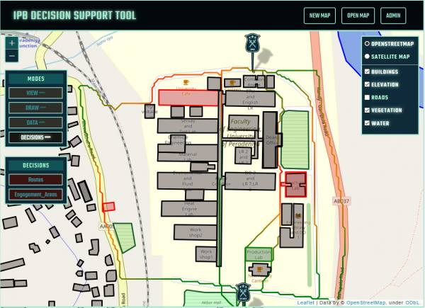

Final Year research project - Group
Download Project Report With Full Details
Abstarct
In military operations armed forces have to get a better idea of the area in which they have to operate including terrain features, threats and avenues of approach. So they gather intelligence on the location, enemy, weather, vegetation, infrastructure and many such factors before making decisions. Intelligence Preparation of the Battlefield (IPB) is the name given for that process of analyzing the situation and making decisions based on predictions. Usually this process happen manually by officers using hard copy maps and it have number of inconveniences. In this paper, we implement and present a set of algorithms, tools and approaches for automating terrain analysis and decision making in Intelligence Preparation of the Battlefield process and compare their results with a manual analysis.
Team
Project Supervisors
-
Dr. Isuru Nawinne - Department of Computer Engineering, University of Peradeniya
-
Dr. Janaka Alawatugoda - Department of Computer Engineering, University of Peradeniya
Introduction
IPB is a process that starts in advance of operations and continues during operations planning and execution. It provides guidelines for the gathering, analysis, and organization of intelligence. The purpose of this intelligence is to inform a commander’s decision process during the preparation for, and execution of a mission. Therefore IPB is a Command and staff tool which allows systematic and continuous analysis of the enemy and the battlefield environment. It presents the results of the process in a graphical format. It is an integrated method of analysing Enemy, Ground and Friendly Forces factors in the Estimate.
Basically there are four steps in IPB process. They are,
-
Define the battlefield environment
-
Describe the battlefield’s effects
-
Evaluate the threat
-
Determine threat COAs
The resulting product of IPB is identification of various areas of the battlefield
that affect Courses of Action (COAs). The four distinctive courses
of action are,
-
engagement areas
-
battle positions
-
infiltration lanes
-
avenue of approach
Any force that has the control of the key terrain has the military advantage. Key terrain areas cannot be defined by geographical features alone. The evaluation of terrain features must be fused with information about weather, enemy asset types, friendly and enemy range of fire, enemy doctrine and type of operation.
The problem with current process is that IPB is done manually by intelligence officers using hard copy maps on which they anotate various significant areas, such as key terrain or defensible terrain. This manual process suffers from a number of inefficiencies as described below.
-
No variable zooming in and out to obtain desired level of detail
-
Annotating the maps is time consuming.
-
Notations on maps get cluttered with the risk of being misread.
-
Information could be disregarded or not used effectively in the process of the IPB.
What We Did
The research was basically spllited in to two major sections such that each section contain three milestones. The two sections was,
-
Visual Support for Automating the Intelligence Preparation for Battlefield (IPB) Process
-
Implement Automation of Intelligence Preparation for Battlefield
So the six milestones for the project was,
-
Web-based platform to display overlays on a map.
-
Infrastructure to efficiently store data for overlays.
-
Integrating the data storing mechanism with graphical user interface.
-
A grid based combined obstacle overlay by collecting the vector overlays to a grid
-
Generating the potential mobility corridors in the terrain
-
Risk evaluation of corridors to predict the avenues of approach and key areas.
Web-based platform to display overlays on a map
As the IPB need a visual tool that allows military staff to add battlefield data in to the system and also visualize them as overlays, we needed to firstly develop a web based platform to add overlays and visualize them. So we firstly researched about a framework that we can use to do the map based functions. Simply from front-end side the application should work like a GIS software. Following technologies were chosen by us to be used fro the web platform.
Leafletjs – Leaflet is the leading open-source JavaScript library for mobile-friendly interactive maps.
Open street Maps – OpenStreetMap is a free editable map of the whole world that is being built by volunteers largely from scratch and released with an open-content license.
Infrastructure to efficiently store data for overlays
We needed to find a data storing mechanism and also a data format to store the overlay data. As the data in overlay are spatial data with attributes, We researched about the available methods to store such data.
So the available options to store those data were using a vector
format or a raster format.
So as our web application was JS based, we choose GeoJSON
which is a format for encoding a variety of geographic data structures.
To store and provide the required overlay information relevant to battlefields, there should be a back-end application. As our future algorithms and models are based on python, we used Python Flask as the web framework for our back-end and the we decided to use REST architecture to build the back-end web service.
Following were the attributes we defined for our overlays
Building
-
No of occupants
-
Status
-
Material
-
Building Type
-
No of stories
Vegetation
-
Vegetation Type (grassland, shrubland, woodland, medium density forest, high denisty forest, unknown)
Water
-
Water body type (water, river, reservoir, dock, wetland, unknown)
-
Mark known points of shallow or deep
Roads
-
Road type (tertiary, track, unclassified, secondary, trunk, primary, motorway_link, trunk_link, primary_link, road, secondary_link, tertiary_link, motorway)
Elevation
-
Elevation : float value
Integrating the data storing mechanism with graphical user interface
Finally we had to integrate the back-end we developed using the data storing mechanism and data retrieving mechanisms with the front-end developed with map overlays
So in our first section of the project, we implemented the web application tool to perform following major tasks.
-
Create and save multiple battlefields(maps).
-
Automatically generate the buildings, water, roads, elevation, vegetation overlays when a new battlefield is created.
-
View a battlefield on user interface graphically with a map (Satellite or Topographical)
-
View the overlays generated for the battlefield graphically on the map separately.
-
Add new buildings, water bodies, vegetation areas, roads on the battlefield using a drawing tool
-
Add values for the defined attributes of the newly drawn shape.
-
Edit values of attributes of automatically generated geographical features.
-
Remove geographical features of overlays.
-
Save changes to be able to access later.
-
All the information are stored in the backend.
Following images are few screenshots from the tool.
Creating the battlefield
 Generated overlays added on the map
Generated overlays added on the map
Adding data to an geographic feature
Save the data insertion
The architecture implemented for the system was basically a 3-Tier Architecture. Presentation layer being our web tool using LeafletJS, Application layer being the python web application using Flask and use REST web services to communicate with Presentation layer. Data layer is the filesystem which stores GeoJSON files in a hierarchical structure. Following diagram is the system architectural diagram.
The auto generation of overlays happen in IPB Service Layer, where the available geographical data for Sri Lanka stored in the server are processed in order to produce the overlays of the given boundaries.
We have obtained relevant digital geographical data for Sri Lanka and pre-processed them to suit the overlays we are considering.
The Elevation data for Sri Lanka have been obtained from highest-resolution topographic data generated from NASA's Shuttle Radar Topography Mission (SRTM). We generated the island wide 25m contour lines using that DEM data and that is used for creating elevation overlay. Also we stored the raster DEM file in server for some other functions including trafficability calculation.
OpenStreetMap data for Sri Lanka were obtained from https://download.geofabrik.de/asia/sri-lanka.html and processed to obtain overlay data for Sri Lanka.
-
OSM Land Use data was used to obtain vegetation overlay by filtering vegetation and mapping their properties to our defined attributes.
-
OSM Building data was processed to get building overlay such that their properties mapped into our defined building attributes.
-
OSM water data was coverted into water overlay
-
OSM road data was converted in to road overlay.
A grid based combined obstacle overlay by collecting the vector overlays to a grid
As we have built the overlays using a vector format with properties, we needed to convert those data overlays to grids of their properties as grid based analysis is used for the processing. We started from the elevation raster file of Sri Lanka obtained from SRTM dataset. In our program to get the combined obstacle overlay first step was to get the elevation grid. So our program was added the functionality to clip the Sri Lanka elevation raster file to the size of the battlefield firstly.
The NASA’s Space Shuttle Radar Topography Mission (SRTM) DEM data's resolution is about 30 meters. It has pixels (cells) of grid approximately 30m containing elevation data. See the image below.
We needed to map these elevation data to a grid of cells of size 10 times smaller than SRTM data resolution for better accuracy as 30m is not a good resolution for finding mobility. So elevation data graph was resampled using bi-linear interpolation in order to reduce the resolution of the overlay grid size to about 3 meters. The elevation data raster overlay after resampling is shown in below.
So the other overlay grids was also to be built to the same shape of the elevation grid obtained, such that they can be put one on other.
So next from the elevation grid, an additional grid of slope was derived. The slope grid is produced such that slope at grid cell (x,y) is assigned the mean of the slope between (x,y) and each of the surrounding grid cells. Following Figure shows the generated slope overlay for above elevation example.

Rasterization techniques were used to get the rater images of the building, water, road and vegetation overlays preserving their properties and those raster images of the overlays were converted to a numpy array for our processing. Following images will show the original map, building grid, water grid, vegetation grid and road grid obtained using our program respectively.

Our target in this milestone was to obtain combined obstacle overlay by combining all these overlays in a suitable way to achieve our goal. So we constructed an overlay called trafficability grid combinning all those overlays (elevation, slope, building, vegetation, water, roads)
Trafficability grid is a grid witch has cells representing squares on land, where each grid cell represent the trafficability of the cell. In another way each cell give a value defining how much it is difficult to troop maneuver withing that cell.
We considered the electric flow model as a foundation of our algorithm to get trafficability grid. In electric current point of view, the electric current or the flow of electrons is determined by the resistance of the medium. The resistance is determined by the resistivity of the materials used in the medium. If the resistance per unit length is k, the resistance of l length medium becomes k x l.
So for each property that we consider that would effect trafficability from the overlays, we defined a value denoting resistance per distance for troop maneuver. So the total resistance per distance for a given grid cell is the sum of all resistances per length of properties that belong to that cell.
So the pseudocode for algorithm used in obtaining the trafficability using the resistance model is given below.
function trafficability(coo):
create empty grid trafficability
elevation_min = minimum(coo.elevation)
for each cell in coo:
slope = cell.getSlope()
isBuilding = cell.isBuildingHere()
isWater = cell.isWaterHere()
isRoad = cell.isRoadHere()
vegetationLevel= cell.vegetation()
relative_elevation = cell.getElevation() - elevation_min
isBridge = isWater and isRoad
resistivity_of_cell = relative_elevation
if slope > max_slope_threshold:
resistivity_of_cell = resistivity_of_cell + resistivity_heavy_slope
if isRoad:
resistivity_of_cell = resistivity_of_cell + resistivity_road
else if isBridge:
resistivity_of_cell = elevation + resistivity_bridge
else if isBuilding:
resistivity_of_cell = resistivity_of_cell + resistivity_building
else if isWater:
resistivity_of_cell = resistivity_of_cell + resistivity_water
else if vegetationLevel == grassland
resistivity_of_cell = resistivity_of_cell + resistivity_vegetation_grassland
else if vegetationLevel == shrubland
resistivity_of_cell = resistivity_of_cell + resistivity_vegetation_shrubland
else if vegetationLevel == woodland
resistivity_of_cell = resistivity_of_cell + resistivity_vegetation_woodland
else if vegetationLevel == medium density forest
resistivity_of_cell = resistivity_of_cell + resistivity_vegetation_medium_density_forest
else if vegetationLevel == high density forest
resistivity_of_cell = resistivity_of_cell + resistivity_vegetation_high_density_forest
else if vegetationLevel == unknown
resistivity_of_cell = resistivity_of_cell + resistivity_vegetation_unknown
else:
resistivity_of_cell = resistivity_of_cell + resistivity_vegetation_empty
update corresponding cell in trafficability grid with resistivity_of_cell
return trafficability
So for the operation of this algorithm, we defined few attributes that describe the resistivity per length for different terrain features as below.
-
max_slope_threshold = 0.4
-
resistivity_vegetation_grassland = 30
-
resistivity_vegetation_shrubland = 100
-
resistivity_vegetation_woodland = 200
-
resistivity_vegetation_medium_density_forest = 400
-
resistivity_vegetation_high_density_forest = 600
-
resistivity_vegetation_unknown = 200
-
resistivity_vegetation_empty = 65
-
resistivity_building = 1000
-
resistivity_road = 1
-
resistivity_bridge = 1
-
resistivity_water = 10000
-
resistivity_heavy_slope = 800
These attributes were given assumed values based on the mobility in each situation.
Generating the potential mobility corridors in the terrain
So next we moved to generating potential mobility corridors that troops can move from a given starting point to an destination. The trafficability grid that was generated in last milestone, was used in determining the mobility corridors, or the avenues of approach. Trafficabilty grid represent a relative cost or a resistance of moving per a unit length, for each cell in grid. Here unit refer to width of a cell in the grid.
To generate the potential mobility corridors, we experimented three approaches. Those were,
-
Generalized Voronoi Diagram Method
-
k-shortest paths algorithm
-
Dijkstra's based path removing algorithm
The voronoi diagram method was to get mobility corridors from a voronoi diagram drawn for a GO-NO terrain map generated from trafficability grid.
an example voronoi diagram
Let P = {p1,p2,…,pn} be a set of n distinct points or sites in the plane. The Voronoi diagram of P is the subdivision of the plane into n cells, one for each site in P, with the property that a point q lies in the cell corresponding to a site pi if and only if dist(q, pi) < dist(q, pj) for each pj ∈ P with j ≠ i. If the sites are replaced with polygons, the above definition holds true with a more complex distance function that represents the minimum distance between a point and a polygon in the plane. Such a diagram for polygons instead of points is called the Generalized Voronoi Diagram (GVD). This can help to find avenues of approach, and other important tactical features of terrain.
Though the optimized algorithm for voronoi diagram is Fortune's algorithm with time complexity O(n log n), as we need to get the Generalized Voronoi Diagram for polygons, we used the basic algorithm with O(n2) for that. Following is the pseudocode for the generation of generalized voronoi diagram from GO NO-GO terrain grid.
function voronoi(go_no_go_grid):
create new grid border_grid
for each no_go cell in go_no_go gird:
if any neighbor cell is a go cell:
mark cell as a border in border_grid
create an array of array of cells (say cell_families) to store connected cells separately
using a connected cell algorithm add connected cells to cell_families
depth_map = grid of size go_no_go_grid
color_map = grid of size go_no_go_grid
put infinity to all cells in depth_map
put zero to all cells in color_map
family_id = 0
for each family in cell_families:
increment family_id by 1
create a go_no_go grid sized grid which contain minimum geometric distance of each cell from the cells in the family, say it distance_map
update the color_map, with family_id, only the cells where distance_map value < depth_map value
update the depth_map , with distance_map value, only the cells where distance_map value < depth_map value
create new grid voronoi_grid
for each cell in color_map:
if any neighbor cell is not equal to cell value:
mark cell as a voronoi grid in voronoi_grid
return voronoi_grid
Following is the voronoi diagram resulted for a given battlefield.
GVD drawn to the battlefield without restricted terrain(left) and with restricted terrain(right)
So in this diagram is a network of paths, which gives many paths that avoids restricted NO-GO areas. Each edge of the voronoi graph corresponds to a path between two restricted NO-GO features. So basically voroni diagram gives an abstract set of paths that one can go avoiding only NO-GO areas. So we can select set of routes that join two positions from the network as below.
set of paths selected using GVD
But the problem in this method is that only the restricted terrain is considered for path generation. the other costs of mobility like cost from elevation, vegetation, roads, slope is not considered as the trafficability grid is mapped to a binary grid of GO, NO-Go and used here. So the accuracy is low as many data are not used.
Considering the time complexity of the algorithm, the algorithm we used for generating this generalized voronoi algorithm has time complexity O(n2), assuming the NO-GO feature density is linearly proportional to number of cells(n) of a battlefield grid.
We created 6 sample battlefields with different sizes in the same location, where it can be assumed as a uniform restricted terrain is there. Then we used the algorithm to compare time take for each.
Following are the 6 sample battlefields created.
See the times taken for the algorithm for different size grids below.
The graphical representation of time taken for voronoi diagram vs number of cells is below.
k-shortest paths algorithm
The k shortest path routing problem is a generalization of the shortest path routing problem in a given network. It asks not only about a shortest path but also about next k−1 shortest paths (which may be longer than the shortest path). Our approach of finding k shortest paths in trafficability grid was actually finding the lowest cost paths, as the grid contain the cost values. We approached the k shortest paths problem by extending Dijkstra algorithm. We have to give start and end locations to find paths here first.
Following is the pseudocode for the generation of paths using k-shortest paths algorithm from trafficability terrain grid.
function kshortest(trafficability_grid, start_cell, end_cell):
count = grid of zeros of size trafficability grid
temp_path_list = queue to store temporary paths
final_path_list = queue to store final paths
add start cell to temp_path_list with cost 0
while temp_path_list is not empty and count value for end_cell < k:
current_shortest_path = get shortest path from temp_path_list
remove current_shortest from temp_path_list
current_destination = destination cell of current_shortest_path
increment count value of current_destination by 1
if current_destination == end_cell:
add current_shortest to final_path_list
if count value of current_destination <= k:
for all neighbor cells of current_destination:
current_path_copy = get a copy of current_shortest_path
new_path = get_new_path(current_path_copy, r_change, c_change)
let new_path be a new path formed by concatenating neighbor cell to current_shortest_path
update cost of new_path by adding the cost of new part
temp_path_list.append(new_path)
return final_path_list
So we generated 10 least cost paths taking k as 10, for the 6 sample battlefields marking their execution times. Following is an image of output paths obtained for battlefield 5.

The problem in this result is that though there are several paths given as output in the result, they are actually represent a single path, just few small changes at few points are there. So those few changes make them the next least cost path. but there are not more different than the earlier path. But what we need is a set of paths that are different actually and go through a different area. So it is clear that k-shortest path algorithm doesn't give the best fit answer and we need not the next least cost paths, but the paths that are really different from others.
The k shortest path problem is a problem where the complexity increases with k, number of cells, as well as distance between the two points given. For our time measurements we gave the start and end points as a corner to the middle of the battlefield approximately.
Following is the table of times taken for the algorithm for different size grids.
The graphical representation of time taken for k-shortest paths algorithm vs number of cells is below.

Dijkstra's based path removing algorithmOur third approach was a dijkstra's algorithm based approach that include path segment removing and path correcting functions. Dijkstra's algorithm is a least cost or least distance finding algorithm between nodes in a graph, conceived by computer scientist Edsger W. Dijkstra in 1956.
Basically for the trafficability grid, when performed Dijkstra's algorithm giving two points as start and end, outputs a path with the minimum cost, that one can go. But it just give one path and we need a set of different paths. After obtaining a shortest path, if we remove that path completely defining it as restricted, dijkstra's algorithm will next find another path that is completely independent from earlier path. They will not have common edges. But they can cross each other in places where both routes are in diagonal directions as in below figure.
Then the set of paths give much different avenues of approaches as we need, but in cases where the route lie on common areas that both can use same path, that doesn't give the correct path and have multiple parallel paths. That happen as the paths coming next after the first path cannot use the same edges used by earlier paths. More importantly when the first path use a already available road in it, next path that need to use the road to some extent cannot use it and it will go in other areas close and parallel to road. See the below image that show the close and parallel path issue in this approach.
Issue of having close and parallel paths (Left) and parts that need that issue to be corrected marked (Right)
So a correction must be done to the close and parallel paths issue in common sections in routes. In the above image those places are circled with a red marker. So we developed a correction algorithm to correct that issue.
When the paths generated were added to a grid, where cells belonging to paths have the cost defined in trafficability grid and other non path areas have a very high cost, the rasterized grid looks like below image.
So in that grid view, the close and parallel, unwanted paths can be seen merged together as they are closer cells. Therefore in our correction algorithm, we made this grid and used dijkstra's algorithm again to this new grid to get least cost paths out of this faulty path set. Also this correction algorithm has a path section removing mechanism as well as a mechanism to identify which path section has to be removed before applying dijkstra's algorithm again to avoid resulting same path.
In paths thickness is obtained for each cells using the number of surrounding path cells. When removing sections from the least cost path generated from new grid, first the segments with different thicknesses are splitted and we give priority to segments where, the path is thin (lowest wisth) and long (length with same thickness). Out of same width segments one with maximum length is chosen. Further the paths get splitted based on crossings as well, because in a crossing the number of surrounding path cells increase, hence taken as an increase of thickness.
So following are the pseudo-codes for getting independent paths, path correction algorithm and obtaining sections to remove from paths respectively.
Getting Independent Pathsfunction independent_paths(trafficability_grid)
max_factor = 5 // no paths of cost more than 5 times of initial path will be resulted
create paths array to store paths
lc_path = get least cost path for trafficability_grid using dijkstra's algorithm
add lc_path to paths
limit = max_factor * cost of lc_path // this is the cost limit for paths
while true:
mark cell of lc path as restricted in trafficability_grid except start and end cell
lc_path = get least cost path for trafficability_grid using dijkstra's algorithm
if cost of lc_path > limit:
break while loop
add path to path
return correct_paths(paths, trafficability_grid) // correct the paths and return
Path Correction Algorithm
function correct_paths(paths, trafficability_grid)
k = a very large value
create array new_paths to store corrected paths
create new grid of shape trafficability_grid and change all cell values to k (say new_grid)
for each path in paths
for all cells of the path:
update new_grid with value from trafficability_grid
for each path in paths
lc_path = get least cost path for new_grid using dijkstra's algorithm
add lc_path to new_paths
section_to_remove = find_section_to_remove(lc_path, new_grid)
mark cells of section_to_remove with k in new_grid
return new_paths
Obtaining Sections to remove from paths respectively
find_section_to_remove(path, new_grid)
k = very large value used in new_grid
initially consider whole path as section to remove
create array sections to store spllited sections
threshold = 6 // initially cells with 6 or more neighboring non-path cells are considered as they are possible thinnest paths
while sections is empty and threshold >= 0:
inside_section = false
length_of_section = 0
start_cell_of_section = path[0]
for cell in path:
empty_count = number of neighboring cell with k // number of non-path neighbors
if not inside_section and empty_count >= threshold:
inside_section = True
start_cell_of_section = cell
length = 0
if inside_section and empty_count >= threshold:
length = length + 1
if inside_section and empty_count < threshold:
inside_section = False
store start_cell_of_section as start, cell as end and length in sections array
find the maximum length section from sections and assign to max_section
threshold = threshold - 2
return max_section
So after applying the correction the paths for above example looked like following. Paths are shown in orange color.
So this approach could be identified as a successful one, as the more unique and different avenues of approaches could be given as output. The routes that were given as output were basically similar paths that a person who is familiar with this area would choose.
Limitation at choke pointsIn this approach, a problem that we identified was, there is only a single path would be given as output through a choke point. Choke points are the places where troops have to maneuver through a very narrow area, where both the left and right sides are restricted areas. As example bridges, mountain passes, narrow areas between buildings etc.
When generating paths, at initial state, when a path is there through a such choke point, though there can be another path which is not exactly similar to this path and has another approach but need to pass this choke point, it will not be given as output. The reason is to happen such a thing there should be close and parallel path segments for those two where there is should be common path. But that cannot happen as parallel and close paths cannot pass restricted part at choke point and the only pass through choke point has been occupied by first path. So to resolve this issue, if there is a choke point in the path generated, before generating the next independent path the pass through choke point must be unoccupied.
Following is an image where paths are generated between two locations in Unversity of Peradeniya and the limitation of paths can be seen as there are two choke points here (Akbar bridge and Peradeniya bridge) and hence the potential avenues marked in light green color are not given in output. Paths in blue color are the computer generated paths.
As described in above to resolve this issue, an modification was done to the 'Getting Independent Paths' algorithm. The identified choke points were made unoccupied after obtaining a path and before generating next independent path. For that instead of making the whole generated path restricted, the cells excluding choke points in the path were made restricted. So to find all choke points and remove path without choke points, an algorithm was developed and it's pseudo-code is as below.
function non_choke_points(restricted_grid, path):
front_cell = None
back_cell = None
create array non_chokes_point_set = to store cells which are not choke points
for each cell in path:
back_cell = front_cell
front_cell = cell
if back_cell is not None and front_cell is not None:
v_d = front_cell[0] - back_cell[0] // get vertical displacement
h_d = front_cell[1] - back_cell[1] // get horizontal displacement
directions = None
is_diagonal = False
if (abs(h_d) - abs(v_d)) == 1:
directions = (1, 0, -1, 0)
else if (abs(h_d) - abs(v_d)) == -1:
directions = (0, 1, 0, -1)
else if(h_d * v_d) == 1:
directions = (1, -1, -1, 1)
is_diagonal = True
else if(h_d * v_d) == -1:
directions = (1, 1, -1, -1)
is_diagonal = True
is_choke = scan(restricted_grid, back_cell, directions, is_diagonal) // start scanning two sides
if not is_choke:
non_chokes_point_set.append(back_cell)
return non_chokes_point_set
function scan(restricted_grid, cell, directions, is_diagonal):
choke_threshold = minimum distance to an obstacle for a cell to be a choke point
restricted_1_found = False
restricted_2_found = False
distance_traveled = 0
distance_step = 1
if is_diagonal:
distance_step = square root of 2
while distance_traveled <= choke_threshold:
distance_traveled = distance_traveled + distance_step
current_cell1 = (cell[0] + directions[0], cell[1] + directions[1])
current_cell2 = (cell[0] + directions[2], cell[1] + directions[3])
if not restricted_1_found and restricted_grid[current_cell1] == 1:
restricted_1_found = True
if not restricted_2_found and restricted_grid[current_cell2] == 1:
restricted_2_found = True
if restricted_1_found and restricted_2_found:
return True
return False
The scan function scan each cell in path in left and right directions up to the distance defined as choke_threshold to find a obstacle, it there are obstacles in both directions withing that limit, that cell is a choke point. We defined choke threshold as 4 units, that will approximately equal to 12 meters.
So see the below image of computer generated output of above scenario after applying the fix to the 'Getting Independent Paths' algorithm.
So now the result seems very similar to a human generated output.
To do a time complexity comparison as in earlier approaches, we executed these algorithms for the 6 sample battlefields. As done in k-shortest path time comparison when choosing start and end, they were chosen such that they are one at a corner and other in center. Following is the table of times taken for the algorithm for different size grids.
The graphical representation of time taken for k-shortest paths algorithm vs number of cells is below.
Comparison of Three Approaches
Below chart compares times taken by all three algorithms tested using six sample battlefields.
The chart suggests that compared to time consumption, Dijkstra's based path removing algorithm is much time efficient than other two approaches. k-shortest path approach is not good as it's time consumption is much high as well as increase exponentially with number of cells.
Following is a qualitative comparison between outputs of the three approaches.
| Generalized Voronoi Diagram Method | k-shortest paths algorithm | Dijkstra's based path removing algorithm |
|---|---|---|
| Only GO,NO-GO terrain is used | Trafficability grid is used with all features | Trafficability grid is used with all features |
| Paths does not depend on cost of traveling | Paths depend on cost of traveling | Paths depend on cost of traveling |
| Different possible paths are resulted, but some mismatch is with paths | paths are not spread, mostly same path with small differences is resulted | Much spread can be seen in paths, actually different possible paths are resulted |
| Time taken for algorithm is low (not the lowest) | Heavy time consuption | Very low time taken (it is the lowest out of three approaches) |
Considering all factors, we decide to use Dijkstra's based path removing algorithm.
Risk evaluation of corridors to predict the avenues of approach and key areas
As we get set of distinct easiest avenues that can be used for troop maneuver, there might be some risks in using the paths due to enemy locations. So in this milestone wedeveloped an algorithm to define the range of threats for the enemy locations annotatedby user and then use that range of threats to find threat for routes generated.The general approach to get a range of threat was, the threat decreasing a uniformamount when going away from the enemy location or building. So as we can definebuildings as enemy ones in our tool, the value must start decreasing from the wall ofthe building to outside. As our representation of terrain was using a grid of cells, wedefined two 2d arrays of the shape of terrain grid called Enemy threat grid and Threat
decrement grid. In here Threat decrement grid has a value for each cell defining how much threat will loss in this cell. The amount is the loss of threat per grid cell unit.Using that we created the enemy threat grid that will finally have a value of threat foreach cell in the terrain. The value is between 0 and 10.In here, what would decrease threat was only distance from the enemy building. Sothe threat decrement grid has uniform values. So the threat range that is resulted is a circular area around the building where threat last only to a maximum fixed distance from borders of the building.When a same cell in threat array get values from two threat locations, the maximum out of the threats at the cell due to all threat locations is kept.So the rasterized image of threat variation from an enemy building is as Following figure when only distance is considered.
Following figure is the flow of the code we developed to get threat grid
So the pseudo-code of the algorithm used to get the threat grid from a building whengiven the border_cell_list, which is the list of cells in the buildings border of it is given below
function threat_grid(border_cell_list, threat_decrement_array)
define starting threat for this building as T
create new grid threat_range
for each cell in border_cell_list:
visited = new grid to store whether the cell visited or not
q = new queue to store scanned cells with threat
add cell to the q with threat T
mark threat of cell in threat_range as T
while q is not empty:
current_cell = get cell with maximum threat cell from q
remove current_cell from q
mark current_cell as visited in visited
let d is current_cell_threat_decrement
d = threat_decrement_array_cell[current_cell]
threat = threat_range[current_cell]
for each unvisited neighbor cell of current_cell:
let n is neighbor_cell_decrement
n = threat_decrement_array_cell[neighbor]
if neighbor is in diagonal direction:
threat_decrement = square_root(2) * (d + n) /2
else
threat_decrement = d + n) /2
neighbor_cell_threat = threat - threat_decrement
if neighbor_cell_threat > threat_range[neighbor]:
update threat_range with neighbor_cell_threat
add neighbor to q
return threat_range
Then we studied how the terrain features would effect the threat and how to introduce those effects to our automated tool. From the features we have for terrain grid we identified following features would effect threat range of an enemy building.
-
Enemy building height
-
Height of surrounding buildings
-
Level of vegetation
-
High elevation than enemy building height in surround area
-
Low elevation than enemy building ground
So to add enemy building height to the code functionality we defined the starting threat T of the algorithm according to the enemy building height. As the threats will be mapped to range between 10 and 0 at the end, increasing starting threat at enemy building is not an issue.
The best way to add the effect of surrounding features to the threat grid, we automatically change the Threat_decrement_array according to the features. As example, in the cells where there is a building, the threat decrement will be higher than normal cell.
So we defined following attributes that affect threat decrement array and assingned some sample values for them and fine tuned the variables until a good result come.
In a normal flat terrain with no features like building or vegetation given, threat from 1 storied enemy building decrease uniformly up to 100m from border of the building. So the average width of a cell in our grid is approximately 3m, So the range is about 33 units.
-
threat_decrement_building_max, this is the threat decrement at places where a building blocks visibility, normally it is a building with same number of stories or more than the enemy building.
-
threat_decrement_grassland, this is the threat decrement at places where there is a grassland
-
threat_decrement_shrubland, this is the threat decrement at places where there is a shrubland
-
threat_decrement_medium_forest, this is the threat decrement at places where there is a medium_forest
-
threat_decrement_high_forest, this is the threat decrement at places where there is a high_forest
-
threat_decrement_elevation_increment, this is the value which the available threat decrement increase when the elevation is higher than the estimated building height
-
threat_decrement_elevation_decrement , this is the value which the available threat decrement decrease when the elevation is lower than the enemy ground level.
-
building_floor_height_average, this is the multiplying factor to get estimated building height from the number of stories of it.
-
range_increment_per_floor, normally range of the single storied building is 33 units, but it increase when the number of stories of enemy building increase. This is the value in which the range increase per single storey.
following Figures are images of the threat array generated in enemy buildings by changing the terrain features.
When all buildings are single floor(LEFT), when top enemy building was made two story (MIDDLE) , when a close building of it also made two story (RIGHT)
When all buildings are two story, the threat range of enemy building is blocked by surrounding buildings as in first image. So when the enemy building is made a two stroy one, it's range of threat doesn't blocked by single floored buildings around. that is why the range has not changed in middle image. So when a nearby surround building also made two story as in right image, the range of enemy building will get effected from that.
Below figure shows the variation of threat with elevation right side of the building, the elevation is high, it is higher than the height of the building, so the threat from building has been limited to right side. Also to left of the building, you can see there is an increase of threat. that is because the ground level to that side is lower than building ground level as well as the vegetation is grassland, that cause more spread of threat towards that side.

Basically vegetation level effect threat range, in below figure to left side of the building, there is a heavy density forest, so the threat have been limited towards that side.
Variation of threat with vegetation
Finally obtaining the threat grid for the whole battlefield, we decided threats for the routes generated between given coordinates. So the paths were colored in IPB tool using the threats obtained for each routes as below. In the threat representation of the map, the colors change from green to red to represent threat from 0 to 10 respectively.
Below is an image from IPB tool when potential mobility corridors were generated and paths are colored according to threat level due to the enemy locations marked in red.

Comparison with Available Systems
Google map directions
Basically the platform normally used to find paths to travel from one place to another place is Google Map directions. Following figure shows the comparison of the avenues of approaches generated between two positions separated by a river and the Google direction result for those two positions.
Comparison with Google direction, Our System generated paths (LEFT) Google Directions for vehicles(MIDDLE) and Google directions for walking(RIGHT)
Basically direction API consider only available routes to generate the paths. Some times they give multiple paths possible but not to much deep level. So it doesn't consider the terrain features or any additional information we give on terrain in generation paths. Also it does not suggest paths to maneuver through non road areas. So in case of avenues of approaches our implementation is much successful towards obtaining avenues of approaches for troop maneuver.
Comparison with result from a related works
In [3] the researchers have developed algorithms to generate avenues of approaches for a small map using a trafficability array and generalized voronoi diagram. Also they have evaluated the avenues of approaches of that map by an subject matter experts (SME). So we recreated the map they have used in the research drawing similar terrain data.Then obtained avenues of approaches for the two locations they have used and then compared it with the result generated by their system and manual result by SME.
Following figure shows the avenues of approaches for that map given by algorithms used by the researchers and the SME.
Avenues of approaches by researcher's algorithms (LEFT) and subject matter expert(RIGHT), (C. Grindle, M. Lewis, R. Glinton, J. Giampapa, and K. Owens 2004, Fig. 5 and 6, p. 4)
Then following figure shows the our IPB tool generated avenues of approaches for the same map created by us on our tool.
Avenues of approaches by our IPB tool
So the avenues of approaches generated by our tool seems much similar to the avenues drawn by subject matter experts in the given research. There are basic three avenues suggested by the SME as well as our system. In the referenced research's output, only two avenues are suggested. Also our result contain risk estimation values for the avenues as well if enemy locations were annotated.
Also the algorithm used by the referenced research is based on a voronoi diagram method. So that approach is giving a complex scenario when comes to larger maps as well as much time as concluded in \autoref{f:label27}. So for larger maps with more details like buildings, water bodies the voronoi diagram become complex and give very high number of paths. So removing unwanted paths is difficult. So for each larger and smaller maps with any amount of features the approach taken by our algorithms is good.
Conclusions and Future Works
Building a tool for battlefield area evaluation, storing and visualizing information, and supporting decision making for troop maneuver planning is the primary objective of this project. In the IPB process also the objective is to build the combined obstacle overlay to use for troop locating and maneuver planning. Avenues of approach, Engagement areas, Defensible terrain are some final high level information obtained through the combined obstacle overlay. In this research we could develop algorithms and the tool to generate and display avenues of approach successfully.
we looked at the low level environmental factors such as ground, and environment data. We developed a database of predefined terrain features data like building, elevation, vegetation, water and roads for any location. In this project we just included data for only Sri Lanka. So any default terrain data for a battlefield are automatically obtained by the tool. Then we build a mechanism to display in on the map as overlays. Also implemented method to put user defined features to overlays. We could developed a backend to store, edit and give the battlefield data separately. Using a REST API, we connected the backend with frontend IPB tool to enable operations on overlays.
We obtained trafficability grid using a grid based model for processing overlay data. In the decision support development part we explored three different approaches to use trafficbilty grid to generate avenues of approach, which was a main requirement in IPB process. Finally we compared and further developed the best and more practical approach from those three. we finally developed the algorithms for the avenues of approach generation. Then We developed algorithms to find threat level for paths due to enemy. Finally we compared our output avenues with available paths generating platforms like Google maps and the avenues suggested by subject matter experts in related researches.
As planned in milestones we implemented only avenues of approaches finding using trafficability grid. So there are few other high-level terrain information such as key terrain, defensible terrain and engagement areas. So as a future work those goals must be accomplished.
Also there are few other terrain information that need to be fused with terrain data like weather and soil type. So we couldn't combine those data due to lack of those data. If those data also got fused, the we could obtain more accurate results. So that need to be done as a future target.
Also when considering the threat from enemy we developed the algorithm to change the enemy range of threat according to elevation, vegetation, surrounding buildings and height of enemy building. So in future works, enemy must be more customized like several types of enemy like snipers, normal ones, scouts so on. Then that type also will effect the enemy range.
Also currently we are obtaining the threat from enemy to the avenues. so in future version when there is a considerable high threat from a enemy location to a path, that path should be minimized to avoid that threat making a new path.
References
-
P.Skalický and T.Palasiewicz, “Intelligence preparation of the battlefield as a partof knowledge development,” 2017
-
R. Glinton, S. Owens, J. Giampapa, K. Sycara, C. Grindle, and M. Lewis, “Terrain-based information fusion and inference,”Proc. Seventh Int. Conf. Inf. Fusion,FUSION 2004, vol. 1, pp. 338–345, 2004
-
C. Grindle, M. Lewis, R. Glinton, J. Giampapa, and K. Owens, Sean Sycara, “Au-tomating Terrain Analysis: Algorithms for Intelligence Preparation of the Battlefield,”Proceedings of the Human Factors and Ergonomics Society Annual Meeting, vol. 48,no. 3, pp. 533–537, 2004
-
C. J. James Donlon and K. D. Forbus, “Using a Geographic Information System forQualitative Spatial Reasoning about Trafficability,”Proc. QR99, pp. 1–11, 1999
-
K. K. Rowel and H. Ranasinghe, “Impact of gis modelling in military operationalplanning..”
-
E. D. Porter, “An overview of the army gis research program,” 1987
-
W. Headquarters, Department of the Army, “Terrain analysis,”Encyclopedia ofGeographic Information Science, 1990.
-
M. C. A. Agee, “INTELLIGENCE PREPARATION OF THE BATTLEFIELD(IPB),”Society, vol. 1387, no. 22, pp. 1383–1387, 1987
-
U. W. Mark Meeder, Tobias Aebi, “The influence of slope on walking activity andthe pedestrian modal share,”20th EURO Working Group on Transportation Meeting,2017.
-
D. E. Sidran, “TIGER: AN UNSUPERVISED MACHINE LEARNING TACTICALINFERENCE GENERATOR,” 2009
-
P. Svenson and H. Sidenbladh, “Determining possible avenues of approach usingANT,” 2003.